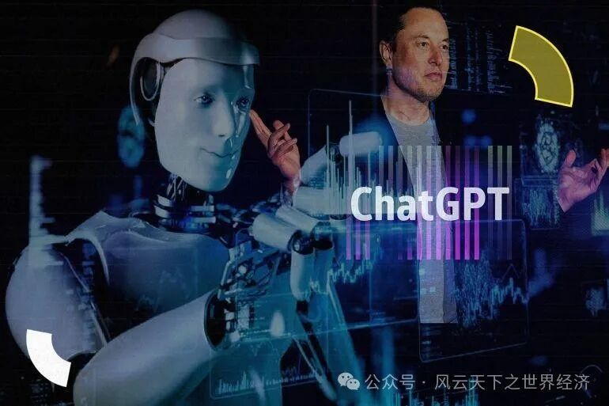

我们用Title/Date/Event/Insight/Voices/Observer来还原此时此刻的世界经济

位于加州的IT巨头-半导体供应商博通
- Title 在摩尔定律碰壁之前——一场居安思危的收购 - Date 3月22日
- Event
英国反垄断监管机构竞争与市场管理局（Competition and Markets Authority, CMA）警告称，美国芯片制造商博通（Broadcom）以690亿美元收购云软件公司威睿（VMware），可能会推高计算机零部件和软件的成本。美国和欧洲的竞争监管机构也在仔细审查这笔交易。
- Insights
去年5月，博通宣布收购威睿，这是有史以来最大的技术收购之一，仅次于戴尔670亿美元的EMC收购提案和微软690亿美元的暴雪收购提案。
故事的两位主角，一位是赫赫有名的半导体供应商，硬件领域的巨头（博通）；另一位是在虚拟化和云计算基础架构领域处于全球领先地位的世界第四大系统软件公司（威睿）。软硬件厂商的强强联手，势必会掀起IT产业的一阵波澜，这也是英国CMA提出警告的原因。
事实上，博通收购威睿并非个例，近年来，软件厂商俨然成为一些大厂收购兼并的重要对象，例如是德科技以9.95亿美元收购ESIGroup；IBM斥资46亿美元收购Apptio。但690亿美元无疑是规模最大的一次，这背后是博通的战略转型规划：
博通CEO陈福阳曾公开表示，“如果有人认为半导体行业能够长期以目前的速度增长，那一定是在做梦。我不是半导体人，但我懂得赚钱与经营”。“18个月就翻倍”的摩尔定律似乎就要看到边界，博通将目标瞄准了增长势头迅猛的云计算领域。在此前，其已经收购了CA，赛门铁克。
市场看好此次收购，并预计交易完成后的三年内，博通将因此增加约85亿美元的预估息税前利润。
这是一场在摩尔定律碰壁之前居安思危的收购。它还面临着一系列的不确定性，巨额收购势必将受到各国的垄断和不公平竞争调查，涉及各方利益的博弈。在此前，博通收购高通的提案也声势浩大却被特朗普一纸驳回、铩羽而归。
- Voice
博通总裁兼首席执行官Hock Tan表示：“博通创纪录的（2022年）第三季度业绩是由云计算、服务提供商和企业的强劲需求推动的。”
威睿首席执行官Raghu Raghuram表示：“通过将博通的软件组合与VMware的领先平台相结合，合并后的公司将为企业客户提供一个更多元化的关键基础架构解决方案平台，满足客户加速创新和更加复杂的信息技术基础架构需求。而且，合并后的解决方案能够为客户提供更多的选择性和灵活性，无论从数据中心、任意云到边缘计算的任何位置，都支持其大规模地构建、运行、管理、连接和保护所有应用。此外，合并后的公司将继续关注技术创新和重大研发项目，为客户和合作伙伴提供更加可观的收益。”
艾媒咨询CEO兼首席分析师张毅：“从2017年向高通发起总价值约1300亿美元的收购被禁止，再到后来陆续成功收购老牌企业软件公司CA Technologies、网络安全公司赛门铁克等热门企业，一系列操作下来，博通的股价一路高涨，它显然已经尝到了甜头。”
TikTok CEO周受资3月23日出席美国听证会接受质询
- Title 请君入瓮 - Date 3月23日
- Event
短视频应用TikTok的CEO周受资于3月23日出席美国众议院能源和商务委员会的听证会，针对TikTok用户隐私、数据安全和美国国家安全等一系列议题接受议员质询。议员们对TikTok是否会通过总部位于北京的母公司字节跳动与中国联系提出了国家安全担忧。周受资表示，该公司永远不会与中国政府分享美国用户数据。
- Insights
这场主题为“TikTok：国会如何保护美国数据隐私和保护儿童免受网络伤害”的听证会持续了整整五个小时，共和党和民主党的议员难得如此团结，将矛头对准了TikTok的CEO周受资。
如今美国已经有三分之二的公民在使用TikTok，超过1.5亿美国用户每天会花费超过90分钟在TikTok上。但在前不久，美国政府以及一半以上的州都已经发布禁令，禁止在政府设备和政府网络上安装TikTok，包括加拿大、英国以及欧盟等国家也都发布了类似的TikTok禁令。
这场听证会更像是对Tiktok的一次围猎，议员们轮流发言并要求周受资只回答Yes or No.他们反复质询母公司字节跳动是否和TikTok有联系并指控TikTok可能会控制用户尤其是儿童观看有中国政府授意的不良内容。
尽管在此前，TikTok已经投资15亿于Project Texas，将敏感数据与美国用户隔离开来单独存储，只有美国的员工才能访问这些数据，但议员们似乎并不买账。
美国政府对已经被曝光操纵过用户推送内容的Facebook和Google相当宽容，却对Tiktok绝不姑息，原因在于其中国出身的原罪。
早前，美国拜登政府要求TikTok脱离北京母公司，中方股东必须出售股份，否则将面临被禁风险。在听证会开始之前，中国商务部周四在例行记者会上对此表示坚决反对，表示出售或者剥离TikTok涉及技术出口问题，必须按照中国的法律法规履行行政许可程序。这场对Tiktok的请君入瓮，是大国博弈逻辑推动下的政治表演秀。
- Voice
TikTok发言人Brooke Oberwetter在听证会结束后的发布给媒体的一份声明中表示：“但不幸的是，这场听证会完全被哗众取宠的政治作秀所主导，完全无视了已经在推动中的、真正能解决问题的方案。”
美国众议员议长：“今天的听证会让大家看到了美国两党对 TikTok 数据安全的关注”，“如果 TikTok 之前被卖给了一家美国公司会变得更安全。”
Tiktok的年轻使用者俄克拉荷马大学学生会主席Christopher Firch：“我不想否定国家安全问题……但我认为人们会说，‘这太糟糕了’，然后一笑置之。他们并没有特别认真地对待这件事。”

- Title 何去何从？一封关于人工智能的请愿书 - Date 3月29日
- Event
包括埃隆·马斯克(Elon Musk)和史蒂夫·沃兹尼亚克(Steve Wozniak)在内的1100多名人工智能行业相关人士签署了一份请愿书，呼吁暂停开发ChatGPT等系统6个月，以便就更好的监管进行讨论。
- Insights
当地时间3月29日，美国非营利组织未来生命研究所（Future of Life Institute）发布了一封名为“暂停巨型AI实验”的公开信。上千名人工智能专家和行业高管，在信中呼吁，所有人工智能实验室应当暂停对更强大的人工智能系统的开发和训练。至少，暂停半年。他们建议，如果不能迅速实施这种暂停，“政府应介入并实行暂停”。
“只有当我们能够确信，AI体系的有利因素都是积极的，且风险都可控，一个强大的AI体系才能成熟。”公开信中这样写道。
伴随人工智能快速发展的，还有人们长久以来的担忧：“这些人工智能将如何影响人类命运？”
在可以遇见的时间里：高盛(Goldman Sachs)的一项研究估计，美国和欧洲三分之二的工作岗位可能会受到人工智能的影响，7%的工人可能会失业。
而在更远的视线之外，人类面临着关于人工智能的终极命题：意识的本质是什么？人与人工智能的伦理规范是什么？
漫长的历史中，人们总被某些力量推动着向前发展。为了生存我们离开丛林走向定居的田地；为了生产力我们走入电气时代，为了更好的生活质量我们走入信息时代......但一切都太水到渠成了，以至于我们忘记检查自己是否拥有刹车的权力：当技术竞争让人工智能过远地跑在了认知、伦理和规范的前面，我们可能就有失控和跛脚的危险。
- Voice
生命未来研究所所长、麻省理工学院物理学教授Max Tegmark认为：“不幸的是，这更像是一场自杀式竞赛。谁先到并不重要，这只是意味着，人类作为一个整体可能会失去对自己命运的控制。”